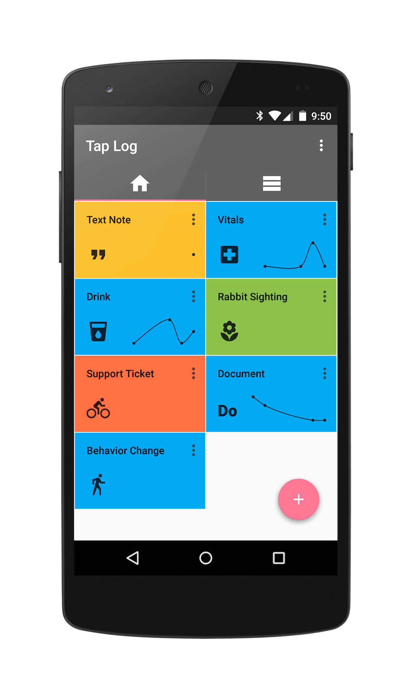
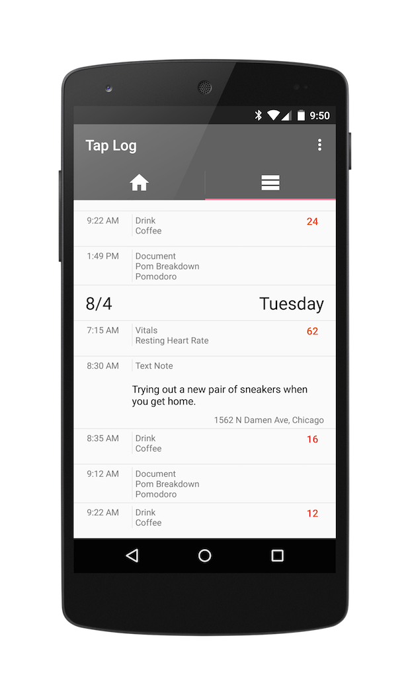
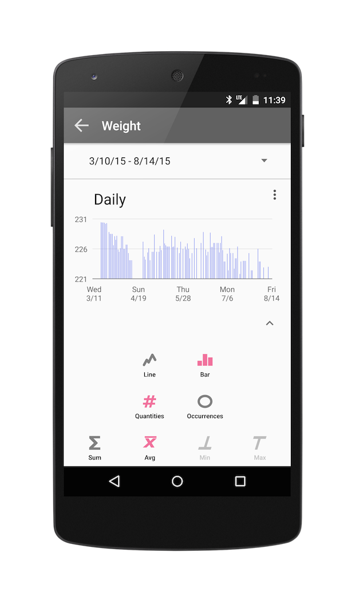

1. Create a button
2. Tap to log
3. Review your data

"Simple and effective"
- Review from Google Play


Copyright ©2015 Tap Log
Copyright ©2015 Tap Log
Users
This is the users section
RobUser:{{params.name}}
This is {{params.name}}'s section
Contact
Tweet to @taplogger
Community
Follow @taplogger